클리그만 연구원
OUR
RESEARCH
클리그만 연구원은 법률 플랫폼을 기반으로 한 민간 경영연구소로 공공기관, 기업, 시민사회 등 사회의 경영 생태계를 잇는
가장 효율적이고 유기적인 네트워크를 지향하여 지속가능성에 대한 사회학적 연구를 진행하고 있습니다.
민관산학(民官産學) 민간 부문과 공공 부문, 산업계, 그리고 학계의 긴밀한 네트워크를 통하여 유기적인 시너지를
창출할 수 있는 기업경영의 솔루션을 제시하기 위한 연구분석은 예측ㆍ분석ㆍ실행의 선제적 위기관리(RiskManagement)를 지향합니다.
포스트 팬더믹 시대의 경영환경은 불확실성의 극대화라고 할 수 있습니다.
사회학적, 경영학적, 그리고 기후환경적 변화의 시기에 기업은 사회적 부담(Social Risk), 법적 위험(Legal Risk), 정치적 리스크(Political Risk)에 직면하고 있습니다.
지속가능성은 기업의 실적만큼 중요한 경영의 화두가 되었으며 다변화된 사회 흐름 속에서 다양한 요구가 기업에 쏟아지고 있는 것이
현실입니다. 실제로 포스트 팬더믹 시대는 환경 위기로 인한 유럽 택소노미와 ESG 규제 강화 등의 글로벌 컨센서스가 이어지고 있습니다.
이에 따라 기업의 지속가능성은 ESG와 같은 지표와 규정을 넘어서 포괄적 사회책임까지 요구되는 경영의 기초 가이드라인으로
제시되고 있으며, 이러한 경영 기조는 향후 더욱 강화될 것이 명확합니다.
첫번째로 사회적 진화에서 2011년 "월가 점령 시위"를 기점으로 경제 생태계의 불균형에 대하여 순응해 온 수용자, 소비자들이 기존의
시스템에 저항하고 기업의 책임과 의무에 대하여 그 어느 때보다 강력한 목소리를 내는 시대가 되었습니다.
금융시장의 폐쇄적 폭리와
특혜에 반발한 월가 점령 시위는 이후 소비자라는 불특정다수로 통칭되던 시장의 다수 결정권자들이
결집하고 행동하는 변화로 이어져
기업의 책임이 강조되는 시대가 도래하게 되었습니다.
두번째로 경영적 변화의 측면에서 사회적 리스크는 경영실적에 직접적인 영향을 끼치는 핵심 요인으로 급부상하면서
지속가능성을
위협하는 잠재적 관리비용의 증가가 불가피한 상황이 벌어지고 있습니다.
사회적 리스크에 의한 소비자 운동, 주주행동, 집단소송 등의
행동주의적 반향은 지난 수년새 급증하여 시장과 기업, 법조계 등 사회 전반의 현상이 되었습니다.
지속가능성과 ESG에 대한 위험관리(Risk Management)는 기업의 존속에 필수적 요인이 된 것입니다.
마지막으로 기후환경 위기는 기업에 경영상 변수뿐만 아니라 다양한 규제와 요구로 위협적인 지속가능 리스크로 급부상했습니다.
실제로 기후위기의 결과로 이어진 환경에 대한 국가간 컨센서스의 확대는 향후 기업경영에 있어서 다각도의 실체적 규범이 마련되고
있습니다.
예컨데 근미래에 기업의 책임을 물을 수 있는 환경문제에 대한 징벌적 손해배상까지 논의될 가능성이 제기되는 등 기업경영의 여러 규제와 제약이 현실화하고 있으며,
이는 사회적 리스크의 핵심 요인으로 작용하기 시작했습니다. 이렇듯 기후재앙으로 인한 공급망 위기, 그리고 경제ㆍ사회의 양극화로 미증유의 위기를 맞이한 경영환경에서 지속가능성을 위한
효율적 시너지의 모색은 최대 과제가 될 것입니다.
클리그만 연구원은 법률 플랫폼을 기반으로 한 민간 경영연구소로 공공기관, 기업, 시민사회 등 사회의 경영 생태계를 잇는 가장 효율적이고 유기적인 네트워크를 지향하여
지속가능성에 대한 사회학적 연구를 진행하고 있습니다. 민관산학(民官産學) 민간 부문과 공공 부문, 산업계, 그리고 학계의 긴밀한 네트워크를 통하여
유기적인 시너지를 창출할 수 있는 기업경영의 솔루션을 제시하기 위한 연구분석은
예측ㆍ분석ㆍ실행의 선제적 위기관리(Risk Management)를 지향합니다.
MISSION
지속가능 위험관리 매트릭스
Sustainability Risk Management Matrix
INSIGHT
-

정책 이슈 분석
정책기조 예측 규제이슈 분석 동향 모니터링 -

기업전략 연구
잠재이슈 발굴 선행대응 전략 실행방안 모색 -
지속가능 대응
ESG 분석·연구 선제적 전략 구축 시너지 네트워킹